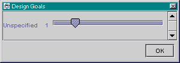

ArgoUML's Design Goals Window allows you to specify which design goals you are trying to achieve. The window shows a list of the types of goals that object-oriented software designers attempt. Each goal has a priority from zero (off) to five (high priority). Each critic supports one or more types of goals, if all supported goals have priority zero, then that critic will be deactivated.
Back to ArgoUML Tours
Back to ArgoUML Home